1.1. The 4-queens problem
We present here a well-known problem among Constraint Programming practitioners: the 4-queens problem. We shall encounter this problem again and generalize it in the Chapter Defining search primitives: the n-queens problem.
1.1.1. The problem
The 4-queens problem[1] consists in placing four queens on a 4 x 4 chessboard so that no two queens can capture each other. That is, no two queens are allowed to be placed on the same row, the same column or the same diagonal.
| [1] | See the section The n-queens problem for a more precise definition of this problem. |
The following figure illustrates a solution to the 4-queens problem: none of the 4 queens can capture each other.
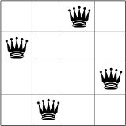Although this particular problem isn’t very impressive, keep in mind that you can generalize it to  chessboards with
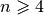.
chessboards with
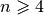.
1.1.2. A mathematical translation of the problem
In Constraint Programming we translate a real problem to a mathematical model with variables and constraints. Variables
represent decisions and constraints restraint the variables of taking arbitrary values altogether. For instance, to model the
4-queens problem, we could use a binary variable  that indicates if a queen is present on the given
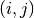 square (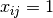) or not (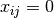). The first index denotes the 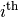 row
and the second index the 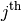 column. We need several constraints to model that no two queens
can capture each other. We also need to constraint the need for 4 queens. We could add the constraint:
that indicates if a queen is present on the given
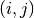 square (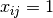) or not (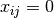). The first index denotes the 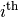 row
and the second index the 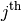 column. We need several constraints to model that no two queens
can capture each other. We also need to constraint the need for 4 queens. We could add the constraint:
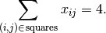
This constraints ensure that we place 4 queens on the chessboard. In general, constraints only permit possible combinations of values of variables corresponding to real solutions[2].
| [2] | Things are a little bit more complex than that but let’s keep it simple for the moment. See the subsection Problems, instances and solutions for more. |
In the next section, we will see how the or-tools’ CP solver tries to solve this problem. More precisely, how the solver will try to solve the model we will develop and explain in the sections The n-queens problem and Implementation of the basic model[3].
| [3] | We don’t need to know the details of the model right now. |
1.1.3. Propagation and search
Constrainst Programming solvers are mainly based on two concepts[4]:
- propagation[5]: variables can have different values but the solver must remove some of those values to keep all the variables values compatible with the model. In Constraint Programming, clever algorithms are devised to remove those values in an efficient manner. These algorithms propagate the current state of the solver and removes incompatible or undesirable values.
- backtracking: from time to time, the solver is stuck because it tried to assign some values to some variables that are just not possible (or desirable) because they don’t respect the constraints. The solver must then challenge its previous choices and try other values. This is called backtracking. Backtracking also occurs when the solver finds a solution but continues the search and tries to find another solution.
| [4] | These are two key elements of a Constraint Programming solving algorithm but there are many more! |
| [5] | Propagation is also called domain filtering, pruning or consistency techniques. |
To better understand Constraint Programming, let’s have a look at a real solving process[6]. In the following Figures, crosses represent the action of removing values from variables’ domain. Each step in the solving process is separated from the following one by an horizontal line.
| [6] | You can find this search process detailed in the sections Implementation of the basic model and cpviz: how to visualize the search. |
The solver starts by placing the first queen in the upper left corner. Because of the model we gave to the solver, it knows that there cannot be any other queen in the same column, hence the grey crosses on the following Figure. One constraint tells the solver that there cannot be another queen on the same diagonal with a negative slope (the diagonals going down then right). The red crosses show this impossibility.
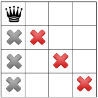One constraint tells the solver that no two queens can be on the same row, hence the next red crosses.
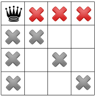After this first step, only the white squares are still available to place the three remaining queens. The process of excluding some squares is what is called propagation.
The second step starts with the solver trying to place a second queen. It does so in the first available square from above in the second column. As in the first step, the solver knows that no other queen can be placed in a column where it just placed a queen, hence the new grey crosses in the next Figure.
The propagation is as follow:
The same negative diagonal constraint as in step 1 tells the solver that no queen can be on the negative diagonal of the second queen, hence the red cross.
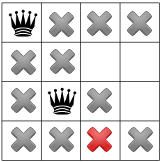Another constraint for the diagonals with positive slopes (diagonals going up then right) tells the solver that no queen can be placed on the positive diagonal of second queen, hence the red cross.

Now, we have a failure as there is no possibility to place a third queen in the third column: there simply can not be a solution with this configuration. The solver has to backtrack!
The solver decides to challenge its last decision to place the second queen in the third row from above and places it in the fourth row.
The propagation is as follow:
First, the square with the red cross is removed because of the positive diagonal constraint. This leaves only one possibility to place a queen in the fourth column.

The “no two queen on the same row” constraint removes one more square in the third column, leaving only one square to place the last remaining queen.

This is of course not possible and the negative diagonal constraint tells the solver that no queen can be on a negative diagonal from the fourth queen. Since there is one, the solver concludes that there is a failure. It has to backtrack again!
First, it tries to challenge its last choice for the second queen but it detects that there are no more other choices. The solver has to challenge its first choice to place the first queen in the first row and places the first queen in the first column second row.
The propagation can now take place:
Two values are taken away because of the negative diagonal constraint:
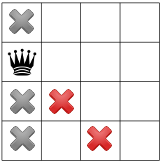while the positive diagonal constraint one:

Now comes the turn of the “no two queen on the same row” constraint and it is responsible of removing the next three red crosses:
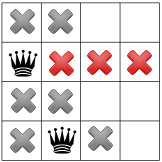The positive diagonal constraint kicks in and forbids the red square leaving no choice to place a third queen in the third column first row.
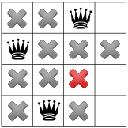The “no two queen on the same row” constraint forbids any other queen to be placed on the fourth row:

and any other queen on the first row, leaving no choice but to place the fourth queen in the fourth column third row:
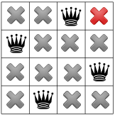The solver finds out that the model is respected, so we have our first solution! Should the solver continue the search, it would have to backtrack and try to place the first queen in the first column third row.
Google or-tools |
User's Manual
Google search
Welcome
Tutorial examples
Current chapter
1. Introduction to constraint programming
Previous section
1. Introduction to constraint programming
Next section
1.2. What is constraint programming?